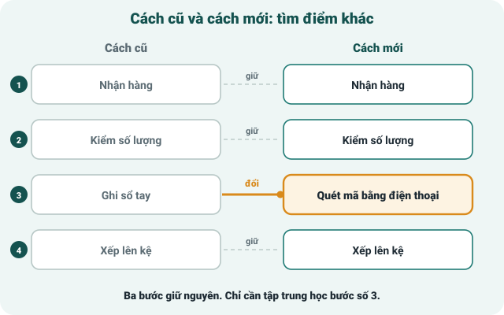

K6 · Thích ứng và bền bỉ › Bậc 2 Bắt đầu
Khi công cụ hoặc quy trình thay đổi, làm quen nhanh và hỏi lý do
Cách tự học một việc hoàn toàn mới có ở bài Học nhanh việc mới (K7). Bài này tập trung vào lúc cách cũ bị thay bằng cách mới. Phần tinh thần có ở tamhonkhoe.com.
1. Mục tiêu
- Làm quen công cụ, quy trình mới theo 4 bước, bắt đầu bằng hỏi lý do.
- Nhận góp ý, hỏi rõ một điểm, sửa và làm tiếp.
2. Khởi động truy xuất
- Năm dấu hiệu của tin nhắn lừa đảo là gì?
- Ba bước xử lý tin nhắn đáng ngờ là gì?
Đáp án
- Gấp gáp; xin thứ bí mật; đòi chuyển tiền hoặc đổi số tài khoản; địa chỉ gần giống; giả danh người quen.
- Dừng; kiểm tra qua kênh khác; báo đúng người.
Xem lại: Nhận ra email, tin nhắn lừa đảo.
3. Giải thích
Chỗ làm đổi phần mềm bán hàng. Quy định đóng gói đơn hàng thay đổi. Mẫu báo cáo có thêm cột mới. Người mới thường thấy khó chịu: vừa quen cách cũ thì lại phải học lại.
Thay đổi thường có lý do. Hiểu lý do giúp bạn làm đúng nhanh hơn, và bớt bực bội.
Bốn bước làm quen cách làm mới
- Hỏi lý do"Mình đổi để giải quyết việc gì ạ?" Hỏi để hiểu, không để phản đối.
- Tìm điểm khácSo với cách cũ, những bước nào đổi? Bước nào giữ nguyên?
- Thử ở việc ít rủi roLàm thử với đơn nhỏ, khách quen, hoặc dữ liệu mẫu trước.
- Ghi chỗ vướngGom lại, hỏi người phụ trách một lần trong ngày.
Vì sao tìm điểm khác? Thường chỉ vài bước thay đổi, phần lớn vẫn như cũ. Biết đúng chỗ đổi, bạn tập trung học phần đó.
Ghi chỗ vướng thay vì hỏi từng câu. Khi cả nhóm cùng học cách mới, người phụ trách rất bận. Gom câu hỏi lại giúp họ trả lời một lần cho nhiều người.
Nhận góp ý mà không bỏ dở việc. Khi đang làm cách mới, bạn sẽ được nhắc nhiều. Có người nghe góp ý thì dừng hẳn, hoặc cãi lại. Hãy làm theo 3 bước:
1. Nghe hết, cảm ơn 2. Hỏi rõ một điểm 3. Sửa và làm tiếp
Ví dụ: "Dạ em cảm ơn chị. Ý chị là dán nhãn ở mặt trên thùng, không phải mặt bên, đúng không ạ?" Rồi sửa ngay và làm tiếp.
Nếu thấy cách mới có vấn đề thật? Đừng tự quay về cách cũ. Ghi lại cụ thể: việc gì, lúc nào, kết quả ra sao. Sau đó báo người phụ trách. Cách nói rõ vấn đề có ở bài Mô tả vấn đề và đề xuất phương án.
4. Ví dụ tại nơi làm việc Việt Nam
Tình huống giả định. Huy làm nhân viên kho ở một cửa hàng bán đồ gia dụng online. Từ tuần sau, kho chuyển từ ghi sổ tay sang quét mã vạch bằng điện thoại.
Huy làm như sau:
- Hỏi chị quản lý kho: "Mình đổi để giải quyết việc gì ạ?" Chị nói: để biết tồn kho chính xác, tránh bán hàng đã hết.
- So với cách cũ: vẫn nhận hàng, kiểm số lượng như trước. Chỉ đổi bước ghi: quét mã thay vì viết sổ.
- Thử quét 10 thùng hàng ít giá trị trước.
- Ghi 2 chỗ vướng: mã bị mờ thì làm sao; hàng không có mã thì nhập thế nào. Cuối ngày hỏi chị một lần.

Vì sao cách này tốt: Huy hiểu lý do, biết đúng chỗ đổi, thử ở việc ít rủi ro, gom câu hỏi lại.
5. Thực hành
Tình huống giả định. Bạn làm phục vụ ở một nhà hàng. Nhà hàng chuyển từ ghi phiếu giấy sang nhập món trên máy tính bảng. Ngày đầu, anh quản lý nhắc: "Em phải chọn bàn trước rồi mới nhập món."
Viết 4 bước bạn làm quen, và câu bạn trả lời góp ý của anh quản lý.
Gợi ý 1
Điểm khác so với cách cũ: ghi tay hay chọn trên màn hình? Phần nào giữ nguyên?
Gợi ý 2
Câu trả lời góp ý: cảm ơn, rồi hỏi rõ một điểm.
Lời giải mẫu
- Hỏi lý do: "Mình đổi để bếp nhận món nhanh hơn phải không anh?"
- Điểm khác: không ghi giấy, chọn bàn và món trên màn hình. Giữ nguyên: hỏi khách, đọc lại món.
- Thử nhập cho bàn khách quen hoặc bàn ít món trước.
- Ghi chỗ vướng: khách đổi món thì sửa thế nào. Hỏi một lần sau giờ cao điểm.
Trả lời góp ý: "Dạ em cảm ơn anh. Nếu khách chuyển bàn thì em làm sao ạ?" Rồi nhập tiếp.
6. Tự kiểm tra
Chọn đáp án. Mỗi lựa chọn đều có giải thích.
Câu 1. Chỗ làm đổi mẫu báo cáo. Câu hỏi nào nên hỏi đầu tiên?
-
Chưa đúng. Câu này nghe như phản đối. Nên hỏi để hiểu lý do.
-
Đúng. Đúng. Hiểu lý do giúp bạn làm đúng nhanh hơn.
-
Chưa đúng. Tự đoán dễ làm sai mẫu mới.
Câu 2. Vì sao nên thử cách mới ở việc ít rủi ro trước?
-
Đúng. Đúng. Thử với đơn nhỏ hoặc dữ liệu mẫu giúp bạn quen mà ít rủi ro.
-
Chưa đúng. Mục đích là làm quen dần, không phải né cách mới.
-
Chưa đúng. Cách mới áp dụng cho mọi việc. Thử nhỏ chỉ là bước làm quen.
Câu 3. Bạn có 5 câu hỏi về phần mềm mới. Người phụ trách đang hướng dẫn cả nhóm. Bạn làm gì?
-
Chưa đúng. Hỏi rời rạc làm người phụ trách bị gián đoạn liên tục.
-
Đúng. Đúng. Gom câu hỏi giúp người phụ trách trả lời một lần cho nhiều người.
-
Chưa đúng. Tự quay về cách cũ có thể làm sai lệch dữ liệu của cả nhóm.
Câu 4. Đang làm, bạn bị nhắc: "Dán nhãn mặt trên, không phải mặt bên." Phản ứng nào tốt nhất?
-
Chưa đúng. Góp ý chỉ ở một điểm. Không cần dừng toàn bộ việc.
-
Đúng. Đúng. Nghe, cảm ơn, hỏi rõ nếu cần, sửa và làm tiếp.
-
Chưa đúng. Cãi lại làm mất thời gian. Nếu thấy có vấn đề thật, ghi lại rồi báo sau.
Câu 5. Bạn thấy cách mới làm chậm hơn cách cũ. Bạn nên làm gì?
-
Chưa đúng. Tự ý quay lại làm cả nhóm không thống nhất.
-
Đúng. Đúng. Mô tả cụ thể giúp người phụ trách xem xét điều chỉnh.
-
Chưa đúng. Phàn nàn không giúp sửa vấn đề. Hãy báo đúng người.
7. Phản tư
- Lần gần nhất có thay đổi ở chỗ học hoặc chỗ làm, bạn có biết lý do không?
- Khi được góp ý, bạn thường phản ứng thế nào trong vài giây đầu?
8. Áp dụng thật
Trong 7 ngày tới, chọn một thay đổi đang diễn ra quanh bạn: phần mềm mới, quy định mới, mẫu mới. Hỏi lý do và viết ra 2 điểm khác so với cách cũ. Khi được góp ý, thử trả lời theo 3 bước.
9. Siêu dữ liệu
| skill | K6 · Thích ứng và bền bỉ |
|---|---|
| level | Bậc 2 · Bắt đầu |
| group | N2, N3 |
| framework_map | WEF: Resilience, flexibility and agility; SkillsFuture CCS: Adaptability; LifeComp: P2 Flexibility (chỉ dẫn chiếu) |
| updated | 2026-11-14 |
Hoàn thành bài
Đánh dấu đã học để site gợi ý lịch ôn sau 1, 3 và 7 ngày. Dữ liệu chỉ lưu trên máy của bạn.
Lịch ôn gợi ý: